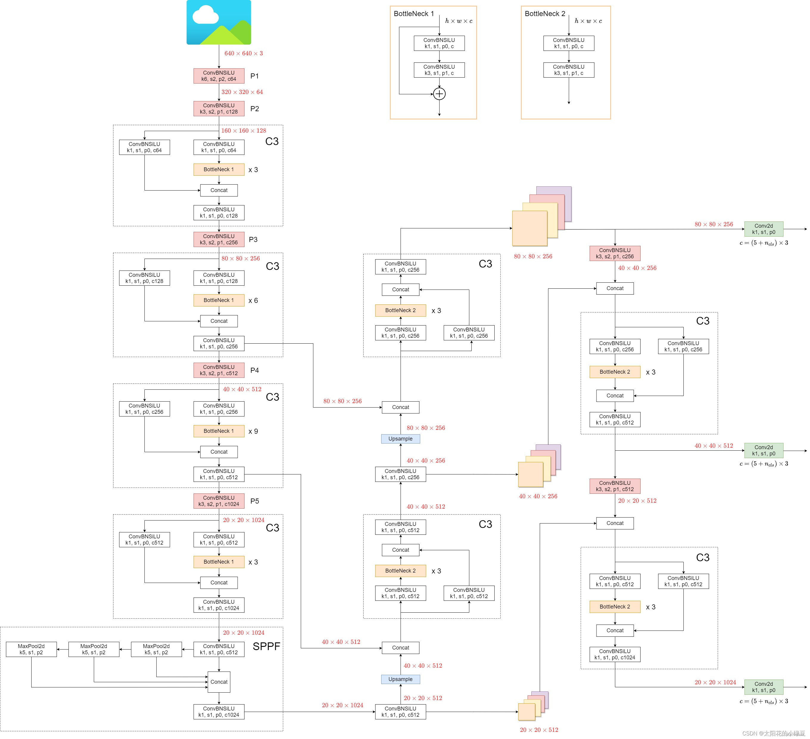
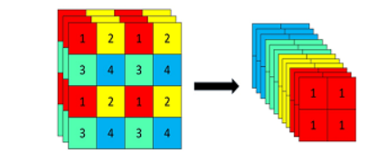
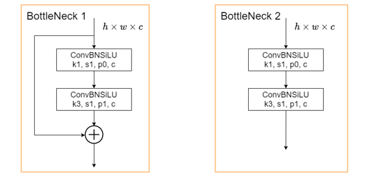
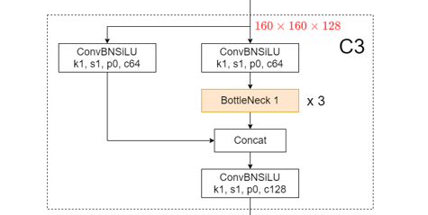
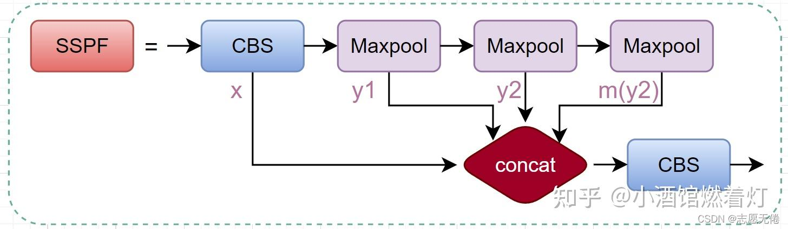

YOLOv5网络结构详解
💾 AI智能摘要 (DeepSeek)
本文详细解析了YOLOv5的网络结构，重点介绍了Backbone中的关键模块。Focus模块通过切片操作实现高宽减半和通道扩展，BottleNeck模块结合残差连接保持特征图尺寸，C3模块通过分支处理和通道拼接构成网络核心。文章还阐述了特征图从P3到P4的转换过程，并展示了SPP模块的多尺度池化结构。整体结构采用卷积、上采样和特征融合设计，适用于高效目标检测任务。
📖 阅读信息
阅读时间：3 分钟 | 中文字符：1209 | 有效代码行数：350
yolo网络结构详解¶
先来放上整个网络结构的示意图，图中所示为yolov5l的网络结构图

一、Backbone结构¶
1、Focus模块¶
进入backbone之前，对原始输入图像进行切片操作，每隔一个像素取一个值，图像高宽减半，通道数变为原来4倍，信息基本没有丢失，以yolov5s为例，输入图像640 *640 *3，经过Focus结构，变为 320 *320 *12，如图：640 *640 *3

2、BottleNeck模块¶
下面两种BottleNeck模块分别用在模型的Backbone和neck部分，BottleNeck1用于Backbone，BottleNeck2用于neck，BottleNeck结构不改变图像高宽和通道数量。

由一个1* 1卷积和3* 3卷积，再加上残差连接组成
第一次进入BottleNeck1，图像形状为160* 160* 64，输出160* 160* 64
3、C3模块¶
如图，C3模块由1* 1卷积和BottleNeck模块组成，构成了yolov5的核心组成部分。整体来说，C3模块先对输入图像做通道数减半的1*1卷积并分支，其中一个分支经过若干个BottleNeck, 然后两个分支在通道维concat，concat后得到的输出通道就和输入通道数一样了，最后再来一个通道数不变的

4、后续网络走向¶
- 经过第一个C3模块，输出图像为160* 160* 128，然后一个卷积，变为80* 80* 256，此时得到的特征图称为P3
| Python | |
|---|---|
- 然后第二个C3模块，输入图像是80* 80* 256，输出图像也为80* 80* 256，然后一个卷积，变为40* 40* 512，此时得到的特征图称为P4
| Text Only | |
|---|---|
- 然后第三个C3模块，输入图像是40* 40* 512，输出图像也是40* 40* 512，经过一个卷积，变为20* 20* 1024，此时得到的特征图称为P5
| Python | |
|---|---|
- 然后第四个C3模块（3个BottleNeck），输出图像是20* 20* 1024，输出图像也为20* 20* 1024，与之前不同的是这里并没有一个卷积使其图像高宽减半，通道数加倍，而是接一个SPPF模块
5、SPPF¶
SSPF模块将经过CBS的x、一次池化后的y1、两次池化后的y2和3次池化后的self.m(y2)先进行拼接，然后再CBS提取特征。 仔细观察不难发现，虽然SSPF对特征图进行了多次池化，但是特征图尺寸并未发生变化，通道数更不会变化，所以后续的4个输出能够在channel维度进行融合。这一模块的主要作用是对高层特征进行提取并融合，在融合的过程中作者多次运用最大池化，尽可能多的去提取高层次的语义特征。

第三个C3模块结束后，进入SSPF模块，输入为20* 20* 1024，先经过一个卷积cv1， 变为20* 20* 512，然后顺序经过kernel_size为5、9、13的最大池化层并依次输出，图像大小和高宽均不发生变化，最后将这四个输出在通道维concat起来，四个20* 20 512，拼接起来得到 20 * 20 2048，然后经过cv2，变为20* 20* 1024
至此，整个BackBone结构完毕，接下来分别是从第二个C3模块结束、第三个C3模块结束、SPPF模块结束引出的连接BackBone和Head(检测层)的Neck
二、Neck结构¶
按照整体网络结构图中由下至上的顺序
1、SPPF模块引出的neck¶
经过SPPF模块后，输出图像为20* 20* 1024，先经过一个卷积，通道数减半，变为20* 20* 512（记为n1,后面会用到），然后最近邻上采样，高宽加倍变为40* 40* 512，然后和第三个C3模块结束后的输出concat后变为40* 40* 1024，然后经过neck部分左下的C3模块，这里的C3会使输出通道数减半，高宽不变，输出40* 40* 512
得到输出40* 40* 512后，经过一个卷积，通道数减半，得到40* 40* 256（记为n2), 然后一个最近邻上采样，得到80* 80* 256，然后和第二个C3模块引出的neck拼接在一起，得到80* 80* 512
| Python | |
|---|---|
然后经过neck中左上角的C3模块，和左下角的C3模块一样，输出的图像高宽不变，通道数减半，关键是进入C3分支的两个卷积的输出通道都缩小了½（相比BackBone里的C3模块），输入为80* 80* 512，得到输出==80* 80* 256（记为n3)，同时也是head1, 进入检测层==
通过左上角的C3模块后，得到80* 80* 256的输出，然后进入一个卷积，通道数不变，高宽减半，输出为40* 40* 256，然后和n2的40* 40* 256concat，得到40* 40* 512，然后进入右上角的C3模块，右上角的C3模块和BackBone里的一样，不改变图像高宽和通道数，通过右上角的C3模块，得到输出为==40* 40* 512，也即head2，进入检测层==
通过右上角的C3模块后，输出为40* 40* 512，然后先经过一个卷积，使图像高宽减半、通道数不变，得到20* 20* 512，然后和n1的20* 20* 512concat得到20* 20* 1024，然后进入neck的右下角的C3模块，这个C3模块和BackBone里的一样，不改变图像高宽和通道数，通过C3模块后得到输出为==20* 20* 1024，也即head3，进入检测层==
三、Head结构¶
经过前面的BackBone结构和Neck结构，得到head1（80* 80* 256）、head2（40* 40* 512）、head3（20* 20* 1024），3个head分别通过3个卷积变为80* 80* 21，40* 40* 21、 20* 20* 21。为什么是21？因为我的分类类别数nc=2，这里的输出通道数应为3*（nc+5）
分类和 bbox 检测等都是在同一个卷积的不同通道中完成，预测结果在通道维得到。